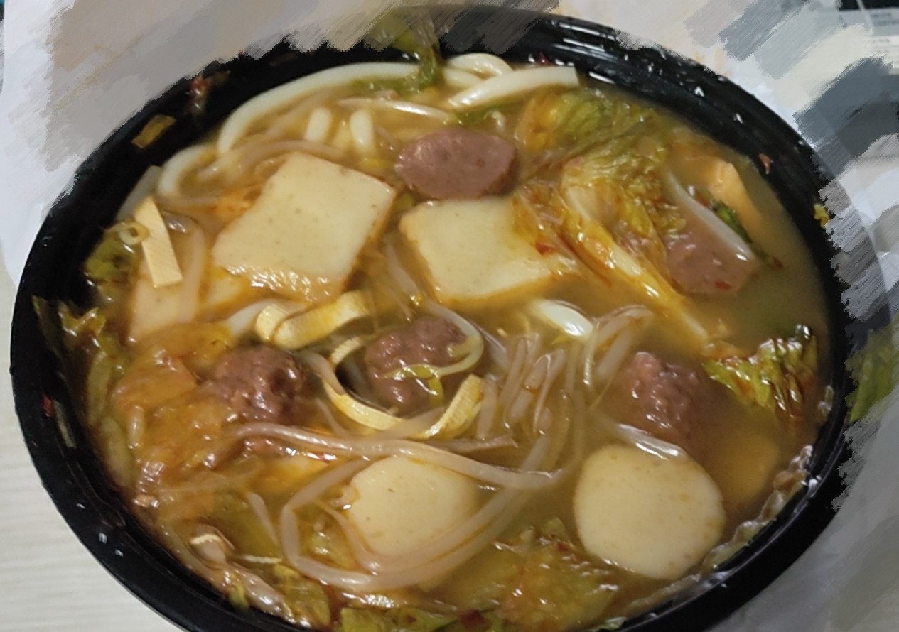
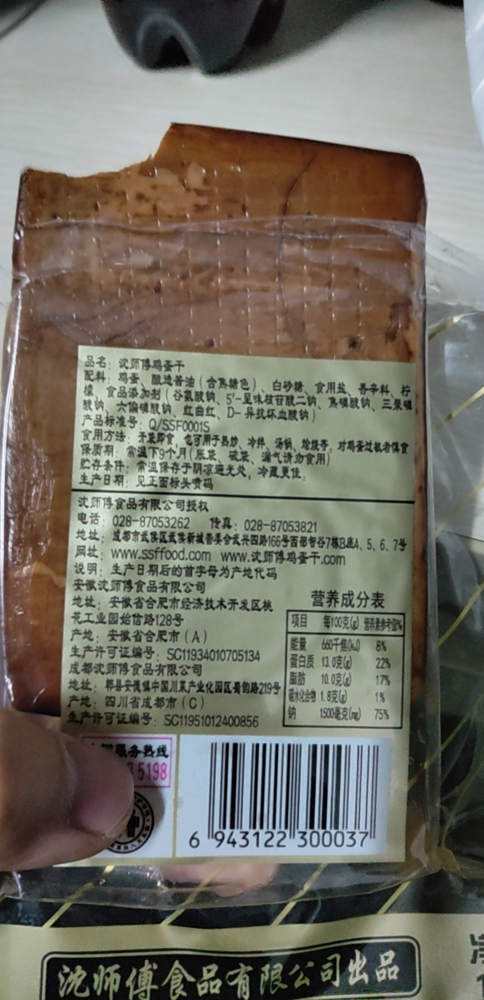

}}index_files/anchor-sections/anchor-sections.css" rel="stylesheet" />
背部训练
硬拉 30kg 3*12
固定器械引体向上 71.5kg 1*12 + 65kg 1*12 + 58.5kg 1*12
坐姿划船 30kg 2*12 + 35kg 1*12
高位下拉 30kg 2*12 + 35kg 1*12
绳索下压 25kg 3*12
山羊挺身 2*20
游泳 20*25m = 500m
饮食也是训练的一部分：
小可爱点的米线

鸡蛋干

手剥火龙果